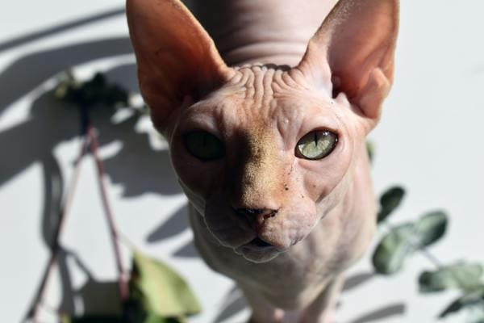
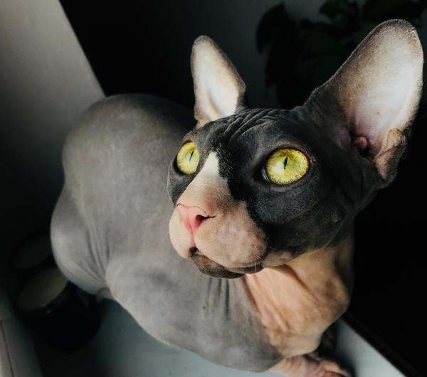
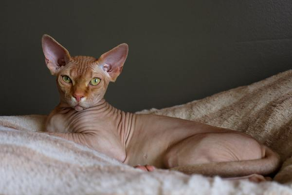
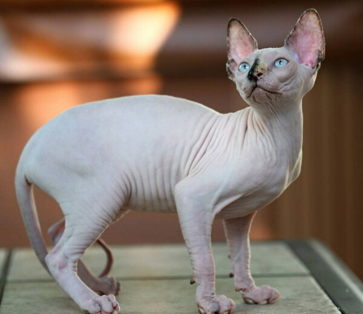
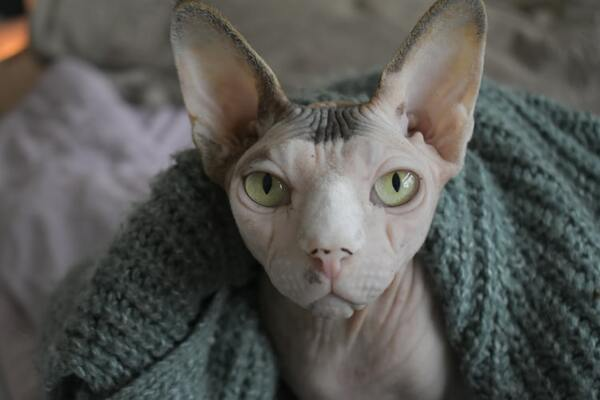
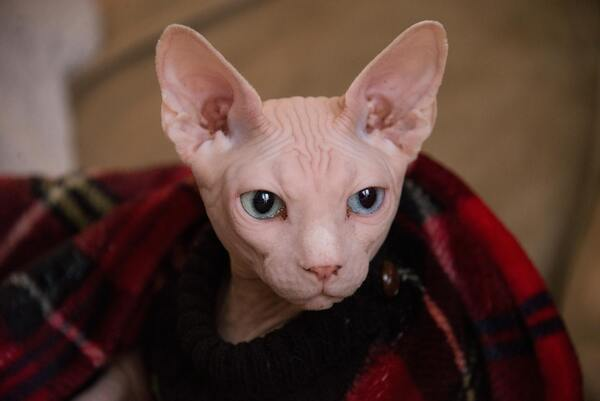

Mèo ai cập
Mèo ai cập, còn gọi là mèo Sphynx không lông. Chúng có ngoại hình vô cùng kỳ lạ và độc đáo, cơ thể chúng hoàn toàn trụi lông kèm thêm một gương mặt nhăn nheo như đang trong trạng thái cáu kỉnh
1. Nguồn gốc, xuất xứ của mèo Ai Cập
Người ta gọi mèo Sphynx là mèo Ai Cập không phải vì Sphynx có nguồn gốc từ mảnh đất sinh ra các Pharaoh mà bởi vì ngoại hình của nó. Ban đầu người ta chỉ gọi là mèo không lông. Nhưng vì ngoại hình của chúng khá giống với bức tượng nhân sư ở Ai Cập nên cái tên mèo Ai Cập, mèo nhân sư ra đời.

Thực chất, Shynx là giống mèo bị đột biến gen tự nhiên không thông qua cấy ghép, giống mèo này xuất hiện một cách rất tình cờ. Vào năm 1966, ở Toronto, Canada có một chú mèo con ra đời là kết quả của cuộc giao phối giữa hai chú mèo khác. Trong khi mèo bố mẹ hoàn toàn bình thường thì trên người mèo con lại trụi hết sạch lông, trông rất hoang dã. Người ta đã cố gắng gây giống nhưng bị thất bại vì giống mèo không lông này gặp nhiều vấn đề về sức khỏe.
Tưởng chừng sẽ biến mất mãi mãi trong lịch sử loài mèo thì đến thập niên 70, Sphynx lại quay trở lại một lần nữa cũng chính tại đất nước Canada. Lúc này khoa học công nghệ phát triển, bằng rất nhiều nỗ lực gây giống, những chú mèo không lông đã có được quần thể gen đủ lớn và khỏe mạnh để hình thành nên giống mèo Sphynx ngày nay.
2. Đặc điểm ngoại hình của mèo Ai Cập
Nếu thoạt nhìn sẽ thấy vẻ ngoài của mèo nhân sư rất khó ưa, một con mèo nhẵn nhụi không lông với làn da nhăn nheo non nớt như một sinh vật vừa chào đời. Nhưng có một điều kỳ lạ là nếu quan sát kỹ hơn bạn sẽ càng cảm thấy mê đắm.
Chắc hẳn ai cũng tưởng mèo Ai Cập không có lông nhưng thực tế giống mèo này vẫn có một lớp lông tơ mỏng bao trùm toàn cơ thể. Dù lớp lông này không có tác dụng giữ ấm nhưng lại giúp Sphynx nhạy bén hơn so với các giống mèo khác. Mèo không lông thuộc loài có lớp da đa dạng màu sắc như: nude, hồng phớt, đen, trắng,... Đôi khi sẽ có những cá thể có màu sắc pha trộn với nhau. Tuy nhiên những chú mèo Sphynx có màu da càng hiếm đỏ hoặc vằn đen sẽ càng có giá trị lớn.

Không to béo như mèo Anh, Scottish Fold hay mèo Ba Tư, mỗi con mèo nhân sư đều có kích thước cơ thể vừa phải, thân hình cân đối, khá cơ bắp. Ngoài không có lông, chúng còn có một điểm đặc biệt khác nữa là không hề có ria. Kích cỡ tai mèo Ai Cập lớn, lúc nào cũng dựng đứng, mắt mở to ngơ ngác cùng vẻ mặt nghiêm nghị. Khi càng trưởng thành, làn da của mèo Ai Cập ngày càng nhăn nheo hơn, khiến chúng trông có vẻ già nua và hung dữ.
Vì không có lớp lông bên ngoài bảo vệ, mèo Ai Cập rất dễ bị tổn thương. Bạn nên mặc áo quần cho những em ấy, nhất là vào những hôm trời lạnh giá.
3. Tính cách của mèo Ai Cập
Đừng để vẻ ngoài dữ tợn của những chú mèo Ai Cập đánh lừa nhé. Trái ngược hoàn toàn với ngoại hình kỳ lạ lại là những nét tính cách vô cùng đáng yêu. Mèo nhân sư Ai Cập cực kỳ thân thiện, hoạt bát và trung thành với chủ nhân. Khi đã ở cạnh chủ một thời gian, chúng sẽ có thói quen là cọ đầu vào chân, nằm vào lòng bạn, và thấy thích thú khi được bạn cho phép ngủ cùng. Không nhút nhát như nhiều giống mèo khác, mèo Ai Cập rất hiểu chuyện. Khi chủ nhân bận việc không chơi cùng được, chúng sẽ tự đùa giỡn một mình.
Cũng như nhiều loài mèo khác, mèo không lông Sphynx cũng rất thích nằm cạnh những đồ vật ấm áp như tivi, máy tính, chăn bông,… đôi lúc sẽ ra sân sưởi nắng. Mèo Sphynx còn có tính cách vô cùng gần gũi, hòa đồng với các loài vật nuôi khác trong nhà. Chúng không có thói quen xấu như gầm gừ, đánh nhau mà thay vào đó là sự nhường nhịn, thân thiện. Nếu như nhiều chú mèo cảnh thuộc dòng dõi khác khá là khó thích nghi trong việc bắt chuột thì Sphynx không lông lại ngược lại. Chúng rất nhanh nhạy, không chỉ là những tay săn chuột cừ khôi mà còn nổi tiếng với biệt tài săn chim, cá.
Sự duyên dáng, lanh lợi và tính cách ngoan ngoãn của những chú mèo Sphynx đã khiến nhiều người cảm mến và hết mực dành tình cảm yêu thương cho chúng.
4. Chế độ dinh dưỡng cho mèo Ai Cập Sphynx
Trong việc lựa chọn thức ăn cho mèo, chế độ dinh dưỡng phù hợp, mèo Ai Cập không lông cực kỳ dễ chăm, bạn chỉ cần đảm bảo đầy đủ chất dinh dưỡng trong mỗi khẩu phần ăn cho chúng là được. Mèo nhân sư Ai Cập có niềm đam mê bất tận với món cá tươi, không ham hố những đồ ăn nhiều chất béo và quá ngọt. Tuy nhiên, nếu bạn bận thì thỉnh thoảng có thể cho các em ấy ăn đồ ăn đóng gói sẵn, những loại dành riêng cho mèo, chúng cũng có đầy đủ các chất dinh dưỡng nhưng đừng quá làm dụng.
Tùy vào mỗi giai đoạn trưởng thành và trọng lượng cơ thể của Sphynx để bạn có thể chia số lượng bữa ăn và khẩu phần ăn hợp lý.
5. Cách chăm sóc mèo Ai Cập không lông
Sức khỏe của mèo Ai Cập khá là ổn định, chúng ít khi mắc phải các bệnh về đường ruột hay phổi. Tuy nhiên, với đặc tính là không lông, mèo Ai Cập dễ mắc các bệnh liên quan tới da. Vì thế, khi chăm sóc những chú mèo không lông, bạn nên lưu ý.
Với đặc trưng là không có lông, da của mèo nhân sư rất dễ bị trầy xước, viêm da dị ứng, đặc biệt rất hay cảm lạnh hoặc cháy nắng. Vì vậy, bạn nên thường xuyên tắm rửa, lau sạch cơ thể và mặc một lớp áo cho chúng, nếu là mùa hè thì có thể mặc những chiếc áo mỏng còn mùa đông thì phải mặc áo thật dày, cho nằm cạnh những đồ vật tỏa ra hơi ấm.
6. Mèo Sphynx giá bao nhiêu? Mua mèo Ai Cập Sphynx ở đâu uy tín?
Trên thị trường mua bán mèo hiện nay ở Việt Nam hiện nay còn rất ít trại mua bán giống mèo Sphynx. Chính vì vậy, để có thể mua được giống mèo này bạn có thể tìm hiểu qua các diễn đàn yêu mèo, mua bán mèo cảnh và thú cưng để tham khảo các địa chỉ uy tín và giá bán.
Với những chú mèo không lông Sphynx trong nước không có giấy tờ chứng minh rõ nguồn gốc sẽ có giá dao động từ 8 – 12 triệu. Tuy nhiên do xuất xứ không rõ ràng nên sức khỏe chúng không được bảo đảm

Giá mèo Sphynx nhập khẩu tương đối cao và chúng thường được đem từ Nga về. Mức giá dao động trong khoảng 25 – 40 triệu hoặc đắt hơn nếu nhập từ Mỹ hoặc Canada tùy về độ thuần chủng, giấy tờ chứng minh nguồn gốc xuất xứ.